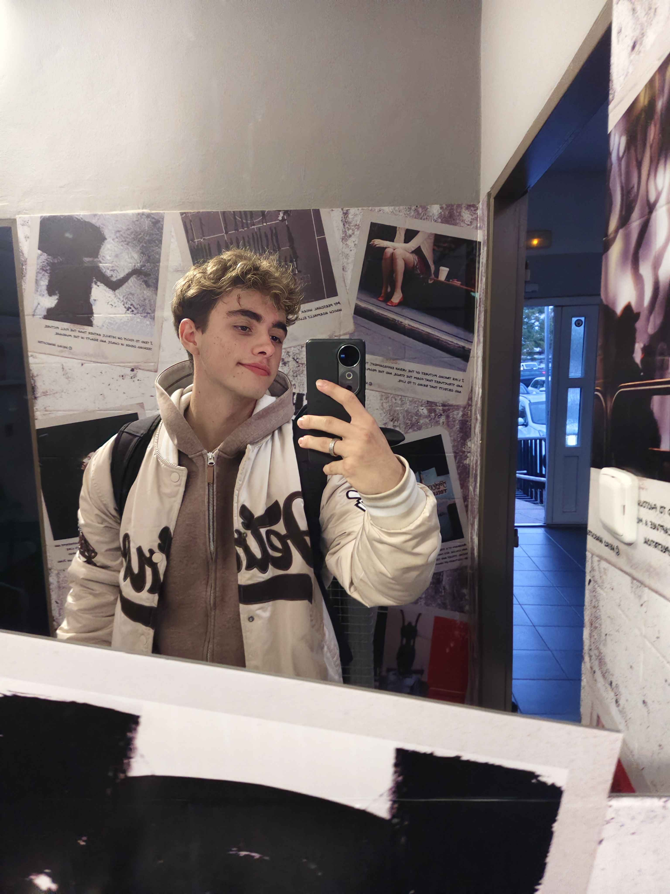

Firemní weby
Moderní prezentace firem, služeb a podnikání, která zákazníkům poskytne potřebné informace.
Pomáhám firmám, restauracím, živnostníkům i jednotlivcům vytvořit moderní webovou prezentaci, která zaujme a představí jejich služby.

Jmenuji se Matěj Hlaváček, je mi 18 let a pocházím z Kladna.
K tvorbě webových stránek jsem se dostal během studia na střední škole Jana Palacha. Programování mě zaujalo natolik, že jsem se mu rozhodl věnovat i mimo školu.
Své zkušenosti získávám už od prvního ročníku. Při práci používám HTML, CSS a nástroje umělé inteligence, které mi pomáhají s tvorbou kódu. Výsledný kód kontroluji, upravuji a řeším případné chyby.
Jsem na začátku své profesní cesty, ale ke každému projektu přistupuji individuálně. Věřím, že každá firma i člověk potřebují web, který odpovídá jejich vlastnímu stylu.
Každý projekt je jiný. Proto ke každému webu přistupuji individuálně.
Moderní prezentace firem, služeb a podnikání, která zákazníkům poskytne potřebné informace.
Webové stránky s nabídkou, fotografiemi, kontakty a přehlednou prezentací podniku.
Prezentace nemovitostí, nabídky prodeje a moderní weby pro realitní služby.
Osobní prezentace, portfolia a stránky, které představí vaši práci a zkušenosti.
Ukázky webových stránek, na kterých jsem pracoval. Prohlédněte si jejich design a zpracování.
Prostor pro váš nový domov.
Ukázkový realitní web s moderním designem, nabídkou nemovitostí a interaktivními prvky.
Zážitky, na které nezapomenete.
Webová prezentace kulturních a zážitkových zájezdů s přehlednou navigací a moderním vzhledem.
Přímý odkaz na živý web doplním po jeho zveřejnění.
Sdělíte mi svoji představu, účel webu a případné požadavky.
Probereme design, obsah, fotografie, rozsah práce a cenu.
Připravím stránky, upravím jejich vzhled a otestuji základní funkčnost.
Po schválení pomohu se zveřejněním a předáním hotového webu.
Chcete vlastní webové stránky nebo modernizovat ty stávající? Napište mi svoji představu. Cena se odvíjí od rozsahu a náročnosti projektu.
hlavacekmaty70@gmail.com